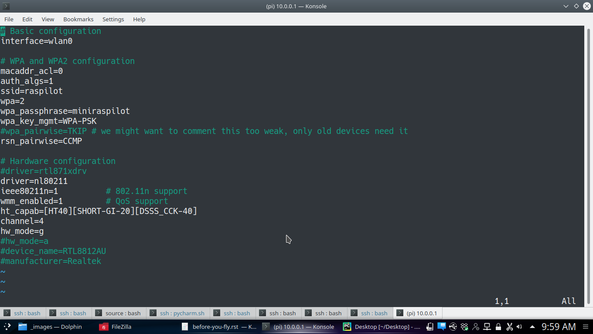

Before You Fly¶
Your UAV will come configured to fly. It would have received at least one flight before being shipped. But there are still a few things about safety, that being doubly sure doesn’t hurt. Also the image is not expanded on the card. This is done so that you can take a backup of the card and keep the known working image with you.
A minimum of following steps need to be followed before you go out to fly
Expand the data partition.
Change Passwords.
Setup failsafes.
Expand the data partition.¶
Connect your computer to the UAV’s wireless network. Default SSID is “raspilot”. The default password is “miniraspilot”. Now you can ssh into the Pi using following credentials
IP: 10.0.0.1 User: pi password: raspberry
Once logged in you can use Pi’s raspi-config utility to expand the filesystem to fill the whole card. More info about raspi-config is available here
Change Passwords¶
Once logged in, change the default password to your liking using the Linux utility passwd.
Wifi password can be changed from wihtin QGC as shown in System Control. If you are working with the command line, the wifi password can also be changed from command line by editing file /etc/hostapd/hostapd.conf as shown below. Generally you should avoid editing the file direclty unless you know enough about hostapd.
{kind=link}
The common wifi parameter can also be changd from within QGC at any time System Control
Setup failsafes¶
It is very important that you have a minimum of battery and fence failsafe on. Otherwise you risk loosing your vehicle in fly away kind of situation. GCS and GPS failsafes are also good to have.